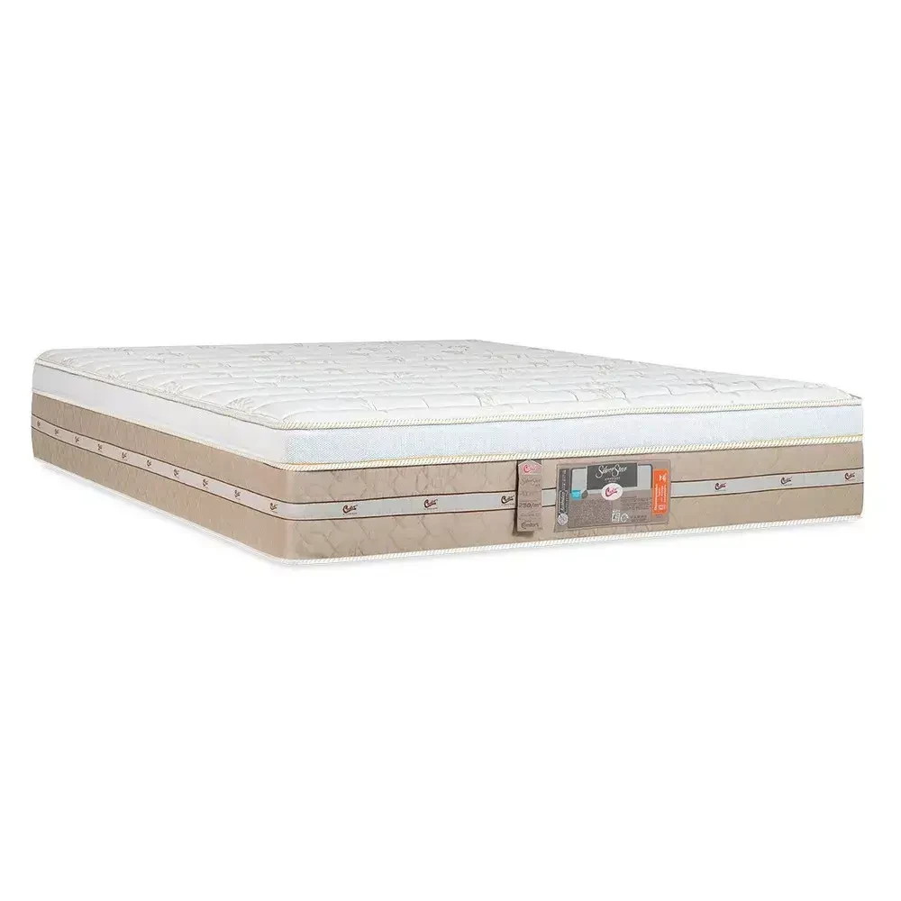
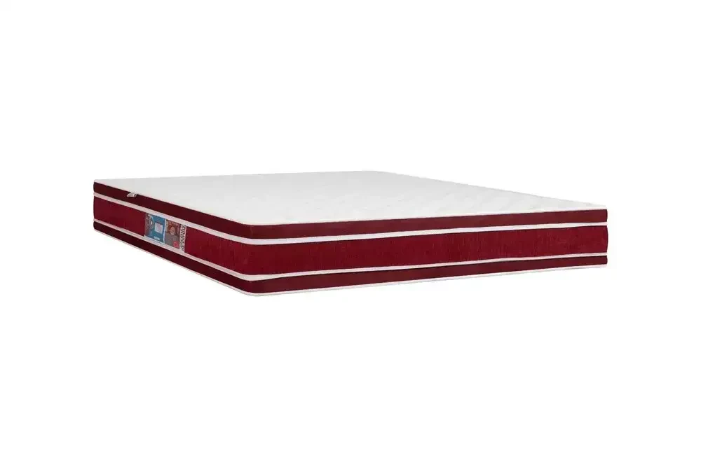

SEU DIACOMEÇAÀ NOITE.
Colchões para o seu jeito de descansar.
Gente de perto para ajudar você a escolher.

Um sonho de colchão.
Um conforto seu.
Castor em destaque.
Explore três referências da marca.



Premium
Amazon Gel
One Face Pocket
Molas ensacadas e espuma com partículas de gel. Conheça a construção e experimente o conforto.
Converse sobre este modeloO CONFORTO
NÃO É IGUAL
PARA TODO MUNDO.
Mais espaço. Outro toque. Uma nova preferência. Conheça as opções das marcas que trabalhamos e encontre a sua.
Imagens oficiais dos fabricantes. Consulte modelos, medidas, valores e estoque atual com a equipe.
Você escolheum colchão.Leva para casaum novo descanso.
A diferença está em encontrar o conforto
que faz sentido para você.
A ESCOLHA
COMEÇA
POR VOCÊ.
Seu espaço e sua preferência vêm primeiro. Faça suas escolhas e a gente continua a conversa.
QUEM CUIDA
DO SEU DESCANSO
ESTÁ AQUI.
O colchão vai para a sua casa.
A atenção começa na nossa loja.
Na Paraíso dos Colchões, escolher começa com uma conversa: entender seu espaço, conhecer as opções e experimentar o conforto.
Estamos no Centro de São Sebastião do Paraíso. Castor, Ortobom e Probel fazem parte da nossa seleção; você faz parte da escolha.
Conheça a loja no InstagramESCOLHA COM
TRANQUILIDADE.
As perguntas que ajudam
a dar o próximo passo.
Como saber qual colchão é melhor para mim?
Comece pelo tamanho do espaço e pelo conforto que você prefere. Depois, experimente as opções e converse com a equipe sobre as características de cada modelo. O guia acima ajuda a organizar essa conversa.
Vocês trabalham com Castor, Ortobom e Probel?
Sim. Essas são as três marcas desta seleção, com destaque para a Castor. Consulte a equipe para saber quais modelos e medidas estão disponíveis na loja.
Os modelos do site estão disponíveis na loja?
O site apresenta referências dos catálogos oficiais. Confirme com a equipe o estoque atual, as medidas disponíveis e os valores antes de decidir.
Como consultar entrega, pagamento e garantia?
A equipe informa as condições de entrega e pagamento e a garantia aplicável ao produto escolhido durante o atendimento.
Posso ir à loja experimentar?
Venha à Rua Doutor Placidino Brigagão, 1161, Centro, em São Sebastião do Paraíso. Entre em contato antes da visita para confirmar o horário de atendimento.
O SEU PRÓXIMO
DESCANSO
ESTÁ LOGO AQUI.
Centro · São Sebastião do Paraíso · MG
Confirme o horário com a equipe antes de visitar.